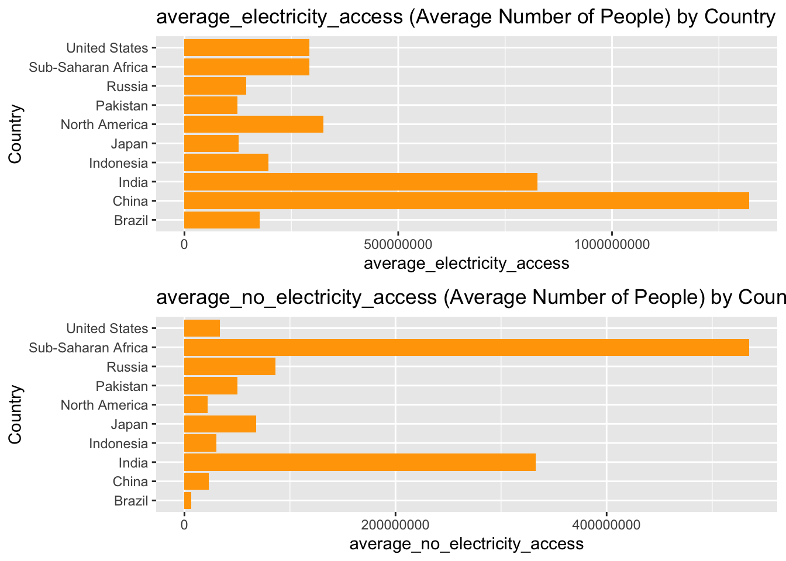
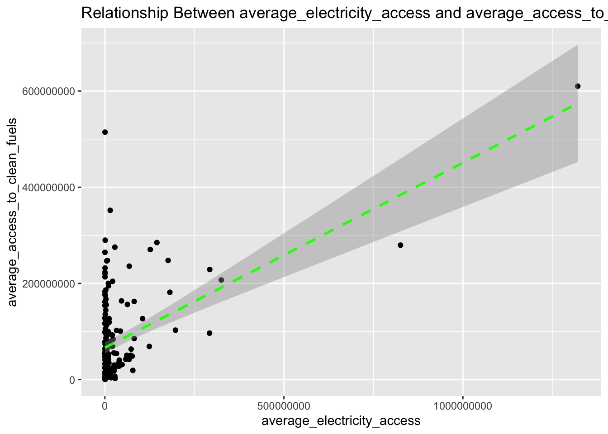
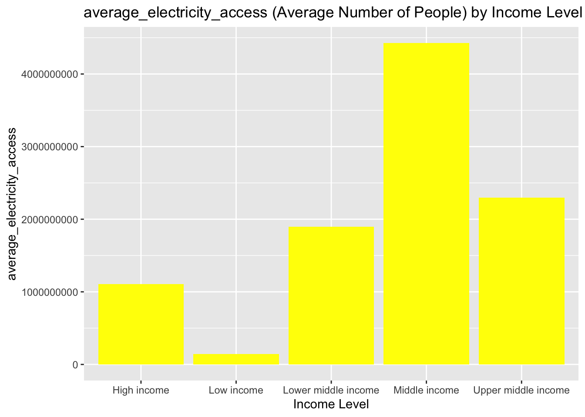

This dataset focuses on energy access across countries, organisations and income groups. It captures variables such as Entity names, Year and indicators like Number.of.people.with/without.access.to.electricity and Number_of_people_with/without_clean_fuels_for_cooking. It is important to understand how socio-economic and geographic differences can affect energy access and support policymakers, analysts and researchers to improve sustainable energy access worldwide.
Import Packages and dataset:
if (!require("pacman")) {install.packages("pacman")}
Loading required package: pacman
pacman::p_load( tidyverse, # tidyverse pkgs including purrr glue, # combining strings and objects gapminder, # dataset ggplot2, # plotting gridExtra, # arranging plots skimr, # Skim Inspection VIM, # Imputation kableExtra # Table) options(scipen =999)energy_access =read.csv("Number of People with and without energy access.csv")
Data Exploration
Energy access is a basic human need and a key variable for both economic and health development. The dataset was chosen to reveal inequalities in global energy access, which is a fundamental human rights issue. Therefore, by analysing this dataset, it helps us to understand how energy access correlates with factors like income inequality. Moreover, the outcome of this data analysis can potentially help people achieving more equitable access to energy resources, contributing to sustainable development and reducing socio-economic inequalities.
By using the glimpse() function, we got a clear view of the dataset’s columns and their data types, and how each variable is represented. This helps in determining the kind of analysis and statistical operations that can be performed on the dataset. For example in this case, the column “Entity” represents country names, income groups and other large worldwide organisations, which are represented by “character” data type. Where “Year”is represented by “integer” datatype. And columns like “number.of.people.with/without.access.to.electricity” and “number_with/without_clean_fuels_cooking” are all represented by “double” data type, means it can have decimal points.
skim(energy_access)
Data summary
Name
energy_access
Number of rows
6582
Number of columns
6
_______________________
Column type frequency:
character
1
numeric
5
________________________
Group variables
None
Variable type: character
skim_variable
n_missing
complete_rate
min
max
empty
n_unique
whitespace
Entity
0
1
4
50
0
264
0
Variable type: numeric
skim_variable
n_missing
complete_rate
mean
sd
p0
p25
p50
p75
p100
hist
Year
0
1.0
2006.51
7.96
1990.0
2000.00
2007.00
2013
2019
▃▆▇▇▇
Number.of.people.with.access.to.electricity
0
1.0
199266381.66
679348377.02
0.0
623066.91
5392424.50
45415305
6912458804
▇▁▁▁▁
Number.of.people.without.access.to.electricity
0
1.0
50197598.02
173187128.90
0.0
0.00
64778.72
7782365
1627944246
▇▁▁▁▁
number_with_clean_fuels_cooking
2661
0.6
158546598.14
475491566.65
2031.8
491476.85
5123887.46
47660953
4405739095
▇▁▁▁▁
number_without_clean_fuels_cooking
2661
0.6
153680861.62
475064567.64
0.0
94237.27
1856184.88
19487483
3093769825
▇▁▁▁▁
By using the skim() function, we first observed that there are 2661 missing values for both number_with/without_clean_fuels_cooking variables and 0 for the rest. Indicating there were item non-response in the data collection. Also, the function reveals the mean and standard deviation for numerical variables in order to understand the central tendency and variability within the dataset. The high standard deviations for all 4 energy access variables indicate there are significant disparities in energy access across countries, organisations and income groups.
The first step was to select only the necessary columns for analysis to reduce data complexity. By creating the Selecting_variables() function, we wanted to focus on variables that are meaningful for understanding energy access. Therefore, we ignored the column number_without_clean_fuels_cooking, since we were more interested in electricity as a main source of energy. We then renamed them for simplicity in further analysis.
Next, we cleaned the missing values and non-responses by first replacing 0 with NA (it is almost impossible for a country to have full or 0 access to energy). Then, as the sample size is large and the missingness can be affected by different econ-status and countries, it is likely to be Missing at random (MAR). Therefore, the Clean_missing_values() function then applies the Hotdeck imputation which replaces missing values using similar cases, maintaining the original data distribution as much as possible. This improves data quality while preserving the underlying relationships.
After that, we created a new Boolean column by setting a More_access_energy function to indicate whether the number of people with electricity access exceeds those without. This column can quickly identify countries with better or worse energy access.
Finally, we calculated the average energy access for each country, excluding aggregated regions like “Europe” or economic zones to just focus on individual countries. This step is crucial in terms of improving policy interventions for specific countries. And makes further visualisations more accessible since it also reduces repetitive entity names.
By setting up multiple functions, we ensured that each operation is reproducible and easy to maintain, providing transparency throughout the data wrangling process. So the refined datasets were generated after calling back to those functions.
To identify the countries with the highest average electricity access, we created a table of the top 10 countries.
top_10_energy = energy_cleaned %>%arrange(desc(average_electricity_access)) %>%# Decending orderslice(0:10) %>%# Only select the first 10 rows# Apply formatting for the table:kable(caption ="Top 10 Countries by Electricity access") %>%kable_styling("striped") %>%kable_classic(full_width =FALSE)top_10_energy
Top 10 Countries by Electricity access
Country
average_electricity_access
average_no_electricity_access
average_access_to_clean_fuels
China
1320832971
23347623
610109613
India
825729809
332702601
279556747
North America
325108463
22066214
207118301
United States
292746153
33714937
228992988
Sub-Saharan Africa
292194162
535095204
96557607
Indonesia
197061012
30017971
102789685
Eritrea
181437394
75658863
181592151
Brazil
176471748
6532384
247835688
Russia
145142564
86516034
284998765
Japan
126693778
68130846
270429873
Filtered the dataset to include only the top 10 countries from the table:
Next, we created bar charts to compare the top 10 countries by their average electricity access.
bar_plot =function(data, variable) {ggplot(data, aes(x = Country, y =!!sym(variable))) +geom_bar(stat ="identity", fill ="orange") +# "stat =" suggests to use the actual y values provided by the datasetcoord_flip() +# Flip the axislabs(title =glue("{variable} (Average Number of People) by Country"),x ="Country",y = variable ) }bar_variables =c("average_electricity_access", "average_no_electricity_access")bar_plots_list =map(bar_variables, ~bar_plot(filtered_top_10_energy, .x))bar_plots_grid =grid.arrange(grobs = bar_plots_list, nrow =2)

bar_plots_grid
TableGrob (2 x 1) "arrange": 2 grobs
z cells name grob
1 1 (1-1,1-1) arrange gtable[layout]
2 2 (2-2,1-1) arrange gtable[layout]
The bar_plot function provides a clear view of the leading countries in electricity access, showing that China and India have significantly higher electricity access compared to other countries. However, these figures are influenced by their large populations, which means that high absolute numbers do not necessarily reflect a high rate of access relative to their population size. Notably, China has a relatively low number of people without electricity access, while India still has a significant population without access. This suggest that other factors like a country’s economic status might also affect energy access.
Therefore, we specifically analysed trends over time, a line plot was created for the two countries with the highest energy access levels, China and India. And maped both graphs on the same grid to make the comparison between graphs easier.
filtered_energy = energy_selected %>%filter(Country %in%c("China", "India"))line_plot <-function(data, y) {ggplot(data, aes(x = Year, y =!!sym(y), color = Country)) +geom_line(size =1) +geom_point() +labs(title =glue("Trend of {y} Over Time in China and India"),x ="Year",y =glue("{y}"),color ="Country" ) }line_variables =c("Number_with_electricity", "Number_without_electricity")line_plots_list =map(line_variables, ~line_plot(filtered_energy, .x))
Warning: Using `size` aesthetic for lines was deprecated in ggplot2 3.4.0.
ℹ Please use `linewidth` instead.
TableGrob (1 x 2) "arrange": 2 grobs
z cells name grob
1 1 (1-1,1-1) arrange gtable[layout]
2 2 (1-1,2-2) arrange gtable[layout]
The increasing trend of energy access and decreasing trend of “without energy” in the graphs plotted by the line_plot function shows that there were improvements made in providing electricity over time in both China and India. The trends reveal the effectiveness of policies in these countries, which can inform similar strategies elsewhere.
Furthermore, a scatter plot was generated in order to reveal any other variables in the dataset that might affect electricity access. In this case we chose to analyse the relationship between clean cooking fuel access and electricity access, to visualise any potential correlations.
scatter_plot <-function(data, x, y) {ggplot(data, aes(x =!!sym(x) , y =!!sym(y))) +geom_point() +geom_smooth(method ="lm", color ="green", linetype ="dashed") +# Add trend line with confidence intervallabs(title =glue("Relationship Between {x} and {y}"),x =glue("{x}"),y =glue("{y}") )}x_variable ="average_electricity_access"y_variable ="average_access_to_clean_fuels"scatter_plot =map(y_variable, ~scatter_plot(energy_cleaned, x_variable, .x))scatter_plot
[[1]]
`geom_smooth()` using formula = 'y ~ x'

The scatter plot shows a positive correlation between electricity access and clean cooking fuels, suggesting that improved electricity access often correlate with better clean cooking fuel availability. Those countries have high energy access often have rich source of clean cooking fuel availability as well.
Finally, to test our hypothesis about economic status effecting energy access, we created a bar plot to visualise the average electricity access by income levels to understand how energy access varies across different economic groups.
income_average = energy_new_column %>%group_by(Country) %>%filter( str_detect(Country, regex("income", ignore_case =TRUE)), !str_detect(Country, regex("&|-", ignore_case =TRUE))) %>%summarise( average_electricity_access =mean(Number_with_electricity, na.rm =TRUE) %>%round(2))income_bar_plot =function(data, variable) {ggplot(data, aes(x = Country, y =!!sym(variable))) +geom_bar(stat ="identity", fill ="yellow") +labs(title =glue("{variable} (Average Number of People) by Income Level"),x ="Income Level",y = variable ) }income_bar_plot(income_average, "average_electricity_access")

The bar plot for income levels highlights disparities in energy access across different economic groups, it shows a general trend that income level is proportional to energy access; this shows the challenges faced by low-income countries in achieving sustainable energy access. Surprisingly, the high income group doesn’t consist the highest number of electricity access, possibly due to uneven distribution of infrastructure, regional variations, or different energy policies. This suggests that there might exist a large proportion of under-served populations in high income countries, underlining the need for more interventions beyond economic status.
By using functional programming with map() for each visualisation, we ensured that they are consistent and reproducible for different variables, which is easier to maintain each plot and improves code efficiency and readability.
Critical Engagement with AI:
Throughout this project, I used ChatGPT as a collaborative tool to enhance my computational process, particularly in data wrangling and visualisation.
One instance was when I struggled to filter out those aggregated regions and economic zones within my dataset. My initial approach involved multiple layers of filter() statements, which made the code lengthy and repetitive. ChatGPT suggested using the str_detect() function with regular expressions. This approach allowed me to only search for keywords and handle exclusions in a single line. it significantly reduced the complexity of my code while introducing me to advanced techniques I hadn’t previously considered.
A part from that, ChatGPT also helped me to refine the presentation of the top 10 countries’ bar plots. My initial bar plots had country names on the x-axis, which were squeezed together and difficult to read. ChatGPT suggested the coord_flip() function in the ggplot package, which swapped the x and y axes and presented the bars horizontally. This largly improved the readability of the charts, as the country names were now neatly aligned along the y-axis, making the visualisation clearer and more user-friendly.
However, there were refinement mistake made by ChatGPT. It suggested to use the function geom_histogram() instead of my correct approach (geom_bar) for the top 10 countries’ bar plots. But histogram is normally used for continuous variables. It would not serve the purpose of comparing discrete categories and their corresponding values; which in our case was the Categorical variable “Country”. This mistake highlighted the importance of maintaining human oversight and domain knowledge when implementing AI suggestions.
From initial data wrangling to refining the final visualisations. Collaborating with ChatGPT encouraged me to think more strategically about optimising code, reproducibility and presentations while also improved my critical evaluation skills not only when challenging my own work but also challenging suggestions that ChatGPT provided. This interaction enriched my problem-solving abilities with coding and positioned me confidently on the right path of my further data analysis journey.